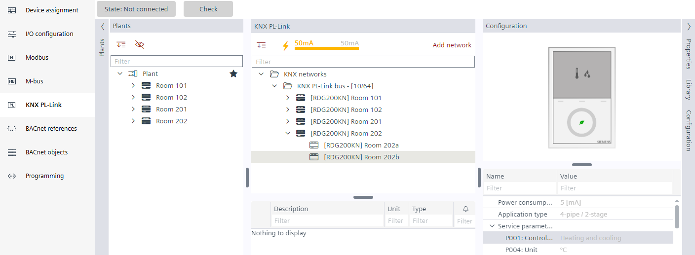
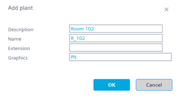
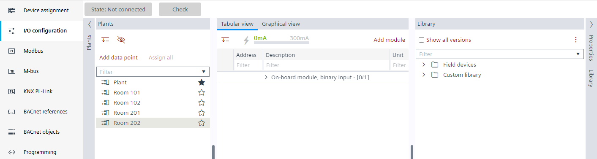
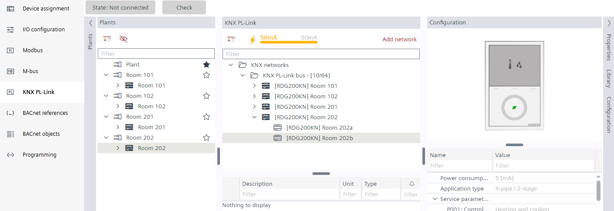
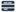
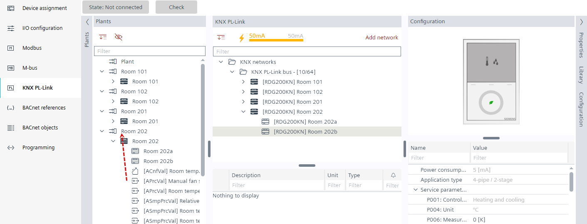
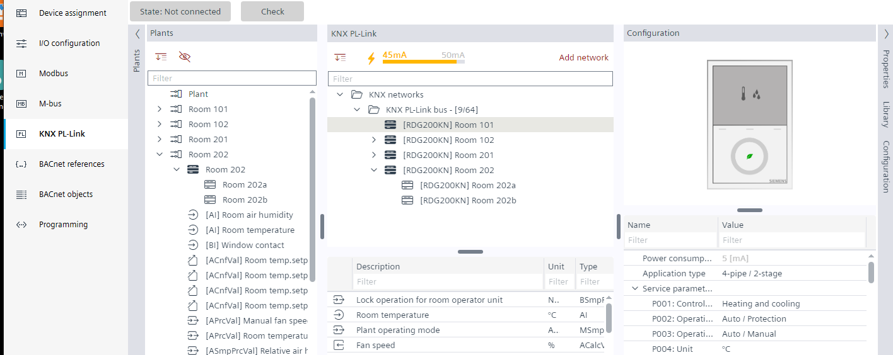
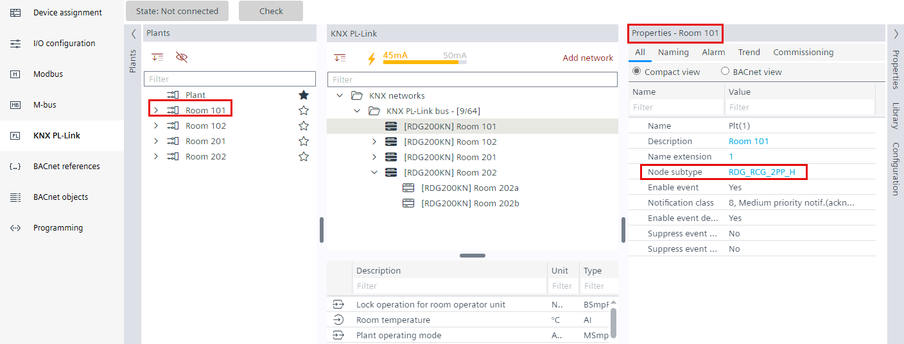
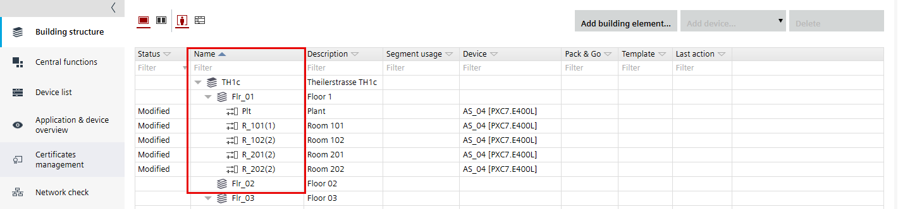
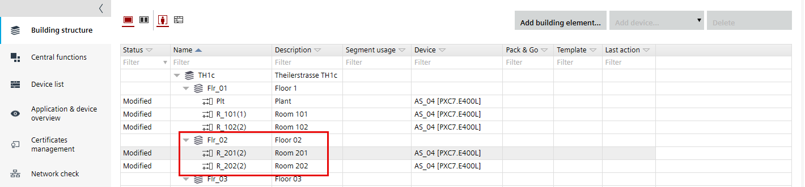

已创建 RDG2 设备时的工作流程
对于 Desigo CC 中 RDG2 设备的图形表示，Logical View必须正确分配给 RDG2 设备。
1. Create the room environment
- The RDG2 devices are created and configured.
Adding and renaming RDG2 manager device
Configuring the RDG2 application type
- Open the KNX PL-Link task.
- In the Plants navigation view, select Plant.
- Right-click and select Add plant.
- In the Add plant dialog box, enter a name and a description, for example:
- Room 102
- R_102
- Click OK.

- A plant
 symbol displayed.
symbol displayed. - Repeat steps 3 and 4 for each room.

2. Assign a device to the room
- In the Plants navigation view, drag all the RDG2 devices below Plant to the desired [Room] .

3. Move the data points to the plant (room)
- In the Plants navigation view, select all the data points below the Room

. - Drag all the data points to the Room folder.

- The data points are moved below the plant. In a room with only one device, the symbol changes to white. If there are subordinate devices, the symbol remains black.

4. Assign the application type to the folder
- In the Plants navigation view, select the Room folder.
- Select the Properties tab on the right.
- The Properties view shows the plant properties.
- Select the Node subtype property.
- Enter the application abbreviation, for example, RDG_RCG_2PP_H.
Desigo CC graphics mapping for RDG2 devices
- The room is configured for the Logical View in Desigo CC.
5. Setup the building structure for the rooms
- Go to Building > Building structure.
- Select Show rooms & plants
 .
. - The rooms are displayed in a flat hierarchy.

- Drag the rooms to the correct building hierarchy.

Note: The plant symbol is displayed for a room. The room symbol is not supported in this version.